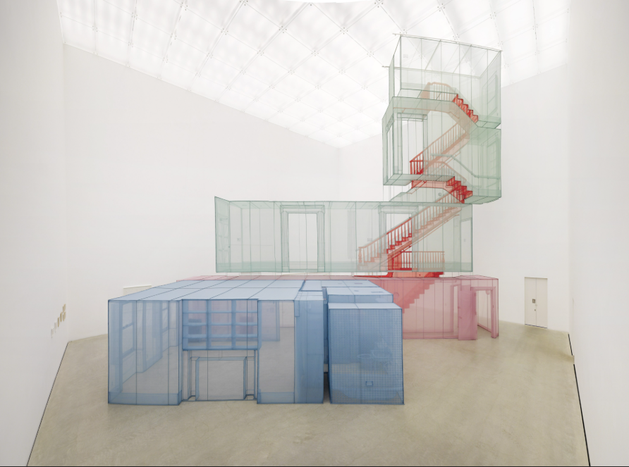

🏛️ 왜 이 전시가 특별할까? 기획의도와 핵심 테마
🏢 "평당 얼마짜리 아파트인가?" (부동산 & 자본)
땅 위에 단단한 콘크리트로 굳어 있고, 사고파는 '재산'으로 여겨집니다. 이사할 땐 남겨두고 떠나야만 하는 무거운 공간입니다.
🧳 "접어서 가방에 넣고 다니는 기억의 그릇"
얇고 투명한 천으로 지어져 어디든 들고 다닐 수 있습니다. 스위치를 켜던 손때, 문손잡이의 온기처럼 내 몸에 새겨진 추억이 곧 진짜 집입니다.
🌱 작가가 밝힌 이번 전시의 키워드: '회향(回向)'
불교에서 '회향'이란 자신이 닦은 공덕을 혼자 갖지 않고 모든 이에게 널리 베풀고 나누는 것을 뜻합니다. 서도호 작가는 지난 30년간 뉴욕, 런던, 베를린 등 타국을 떠돌며 일군 예술적 결실을 고국의 관객들과 온전히 나누겠다는 약속을 이번 전시를 통해 건네고 있습니다.
1. 휴대하는 건축 (Portable)
낯선 이국땅에서 느낀 지독한 외로움에서 시작되어, 얇고 가벼운 천으로 어디로든 가져갈 수 있게 만든 반투명 집입니다.
2. 피부와 손때의 애도 (Rubbing)
한지를 옛집 벽면에 대고 연필로 수만 번 문질러, 손때와 나뭇결의 온기를 허물 벗겨내듯 채집한 촉각적 사랑의 기록입니다.
3. 가족의 포옹으로의 귀환 (Family)
거대한 도시와 아파트를 짓던 작가가 마침내 부모와 두 딸의 옷 주머니를 덧댄 '코트'로 돌아와 가족의 체온을 노래합니다.
💡 서도호 예술 세계를 이루는 5가지 핵심 지표
전시를 감상하실 때 아래 다섯 가지 테마가 작품 곳곳에 어떻게 배어 있는지 관찰해 보세요.
👨🎨 서도호 이야기: 한옥 소년에서 세계적 예술 유목민으로
서도호 작가(1962년생)의 독창적인 공간 감각은 어떻게 탄생했을까요? 그의 인생 궤적과 이를 지탱하는 4가지 사유 철학을 알면 작품이 훨씬 친근하게 다가옵니다.
① 휴대 가능한 건축 (Portable Architecture)
무거운 콘크리트 건물을 트렁크에 접어 넣을 수 있는 천으로 재탄생시켜, '언제든 이주할 수 있는 현대인'의 삶을 대변합니다.
② 건너가는 자리 '전이 공간' (Liminal Space)
안방이나 거실보다 문, 복도, 계단에 주목합니다. 이곳은 과거와 현재, 동양과 서양, 나와 타자가 부드럽게 마주치는 완충 지대입니다.
③ 나와 우리의 변증법 (군복무 & 소수자 경험)
한국에서의 군복무와 미국에서의 아시아계 소수자 경험을 통해, 거대한 집단 속에서 개인이 겪는 억압과 동시에 미약한 개체들이 뭉쳐 이루는 연대의 힘을 표현합니다.
④ 몸을 감싸는 동심원의 껍질 (신체-옷-집)
몸에 가장 바짝 붙은 첫 번째 껍질이 '옷'이고, 몸을 둘러싼 확장된 두 번째 옷이 곧 '집'입니다. 그래서 작가는 집을 짓기 위해 바느질을 합니다.
궁궐을 닮은 한옥 '무송재'에서의 성장
한국 수묵추상의 거장 서세옥(1929~2020) 화백의 아들로 태어났습니다. 아버지가 창덕궁 연경당 사랑채를 본떠 지은 성북동 한옥에서 자라며, 창호지를 통과하는 햇살과 안팎의 경계가 열려 있는 한옥의 공간감을 몸으로 자연스레 익혔습니다.
줄자로 방을 재며 시작된 "가방에 넣는 집"
서울대 동양화과를 마친 뒤 미국 로드아일랜드 디자인스쿨(RISD)과 예일대로 건너갔습니다. 낯선 콘크리트 아파트에서 심각한 공간적 단절과 외로움을 겪은 청년 서도호는, 불안을 달래기 위해 줄자로 방의 치수를 재기 시작했습니다. 이 강박적인 실측 행위가 "내 방을 옷처럼 천으로 만들어 접어 다닐 순 없을까?"라는 혁신적 조형 언어로 폭발했습니다.
베니스 비엔날레 대표작가에서 세계적 유목민으로
2001년 베니스 비엔날레 한국관 대표로 세계의 찬사를 받았으며, 뉴욕·런던·베를린 등을 오가며 거주했던 집들의 스위치와 손잡이를 한 땀 한 땀 바느질했습니다. 나아가 개인을 넘어 광주극장 사택 같은 역사적 공동체의 상처를 탁본으로 보듬었습니다.
두 아이의 아빠가 되어 깨달은 '가족의 온기'
홀로 타국을 떠돌 때는 집이 차가운 사색의 대상이었지만, 두 딸을 낳아 기르며 '집은 가족의 온기가 채워지는 포옹'임을 깨달았습니다. 이번 전시는 거대한 건축에서 출발해 마침내 가족의 주머니가 달린 따뜻한 코트로 돌아오는 감동적인 여정입니다.
🖼️ 놓쳐선 안 될 주요 대표작 10선 가이드
작품별 숨겨진 일화와 동행인과 나눌 수 있는 관람 포인트가 정리되어 있습니다. (사진을 누르면 전체화면으로 크게 볼 수 있습니다 🔍)
🗺️ 추천 관람 동선 (기억의 씨앗에서 가족의 온기까지 6단계)
전시장은 지하 1층 복도에서 시작해 3·4·5전시실을 거쳐 2층 스튜디오로 이어집니다. 이 순서대로 걸어야 작가의 생각이 어떻게 자라났는지 감동적으로 느낄 수 있습니다.
천 작품은 먼저 3~5m 뒤로 물러서서 겹쳐진 빛과 실루엣을 보고, 그 다음 30cm 앞으로 다가가 스위치 볼트 바느질과 지퍼 결합선을 보세요!
지하 1층 복도: 시드 뱅크 (Seed Bank)
기억의 씨앗전시장 입장 전 복도 구역입니다. 어릴 적 조각한 나무 동물, 대학 습작, 그리고 1994년 유학 초기 첫 번째 천 작업인 〈516호〉를 통해 30년 역사의 출발점을 만납니다. 첫 번째 키워드는 서도호 예술의 출발점이다. 전시는 전시장 바깥 복도에 마련된 ‘시드 뱅크(Seed Bank)’에서 시작한다. 유년기의 드로잉과 조각, 대학 시절 작업, 작가 활동 이전의 작품과 아카이브를 모은 공간이다. 이후 30여 년에 걸쳐 전개될 예술 세계의 씨앗을 품은 사유와 실험의 저장소라는 의미다. 몸과 옷, 이동과 공간에 대한 관심이 이미 여러 형태로 드러난다. 평면에서 시작된 실험은 재료와 규모를 달리하며 점차 공간 전체를 다루는 작업으로 나아간다. 그 끝에 놓인 ‘516호/516호-I/516호-II’(1994~1995)는 유학 시절 거주하던 방을 실측해 옥양목으로 옮긴 최초의 천 작업이다. 지금의 서도호를 만든 관심과 방법론의 단서가 이곳에 놓여 있다.
지하 1층 3전시실: 〈작은 문〉 통과 & 실 드로잉 200여 점
기억의 입구은은한 옥색 천 대문 〈작은 문〉을 통과하여 젖은 종이 펄프 속에 색실을 녹여 넣은 싱가포르 STPI 협업 실 드로잉 200여 점을 봅니다. 평면 종이가 3차원 공간으로 솟아나는 기법을 감상하세요.
지하 1층 4전시실: 〈러빙/러빙〉 성북동 집 vs 광주극장 사택
촉각적 애도닥종이를 벽에 붙이고 연필로 긁어낸 두 채의 집이 마주 봅니다. 개인적 기억인 아버지의 한옥(1년간 비바람을 맞으며 제작)과 시민들이 눈을 가리고 탁본한 공적 역사(광주극장)의 대비를 느껴보세요.
지하 1층 5전시실: 〈완벽한 집〉, 〈바닥〉, 〈Who Am We?〉
세계와 사회로 확장6개 도시 스위치가 겹쳐진 천 집과 15m 증명사진 벽지를 확인하고, 소형 인형들이 받치는 강화유리판 〈바닥〉 위를 덧신을 신고 직접 걸어봅니다. 내 발아래 실리는 수천 명의 무게를 체감하세요.
지하 1층 중앙 공용공간: 22m 대형 천 터널 〈둥지/들〉
가상의 통로 걷기서로 다른 4개 도시의 복도 10곳을 일렬로 연결한 22m 길이의 천 터널 내부를 통과합니다. (주의: 섬세한 천이 긁히지 않도록 가방을 몸 앞으로 안아주세요!)
지상 2층 MMCA 스튜디오: 〈사랑의 기억〉 (래코드 협업)
가족의 온기로 귀환2층으로 이동하여 가족들의 옷 주머니가 안감에 촘촘히 덧대어진 울 코트를 감상합니다. 거대했던 건축이 한 벌의 옷이자 가족의 포옹으로 작아지는 감동적인 피날레입니다.
지하 1층 서울박스: LACMA 소장 〈뉴욕 아파트 복도와 계단〉
수직 천 건축2026년 12월 18일부터 결합 설치되는 미국 LA카운티미술관(LACMA) 소장 명작! 붉은색 반투명 천으로 3층 높이의 계단과 복도를 허공에 매달아놓은 장관을 감상할 수 있습니다.
